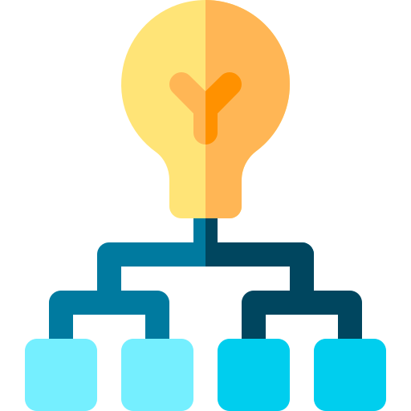
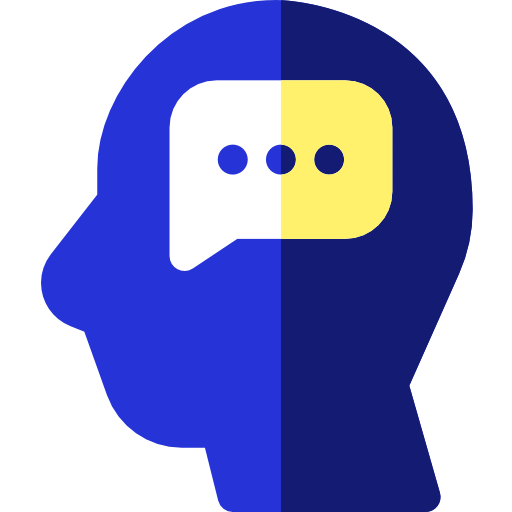

Descovery

Definision
Design&Wireframe

Test&Iteration

Project overview
The Problem:
Users of various backgrounds struggle to navigate the NASA website. From the Homepage, there are no clear goals, a glitch in the display, and featured stories that are spaced too closely together. The authors recognize these issues and endeavor to redesign the site in order for users both to find the information they need quickly and to have a better overall experience.
The Solution:
Redesign the website by integrating new UI components and Principles
My Role:
UX/ UI designer (Individual/ Group Project)
Tools:
Figma, XD, Photoshop
The Process
Design process started with some browsing the website and discover about NASA webpage. Learn about their mission and goals and find who are the main users of the website which was the main challenge in this project. Design process contain thase process
In First step After some discovery in NASA website and understanding the typical user path we came up with Heuristic evaluation to determine website usability and issues

existing webpage

existing webpage in mobile device
Next step in discovery and research was Usability Test Interview with both desktop and mobile device which result in great information about user and user personas


At the last step mood board has made to have a collection of textures, images and text related to a design theme as a reference point.


By card sorting method we understanding and figureout the primary and secondary pages and asked user to sorting the card by their prefrences in this case we shuffled the card befor giving them to user, at the end we came up with new sitemap.

Card sorting

User sorting the card

New site map
Homepage
Navigation Bar
Navigation Bar
Creating wireframe to shows Ideas about home page. The main challenge in this part was how to keep the home page looks clean but give user some important informations that need to be seen by user
Style Guide for NASA website for both desktop and mobile device which is contain colors, typograpg, botton style, icons and component

Here is the first version of prototyping for both desktop and mobile device with adding responsive web design and UI elements


The webpage was tested with 7 users and asked them to look around the the main page and click on menus and search bar and watched them where they stuck and how was their feeling. after testing we find out the home page needs more card to atract user in some important informations .


Redesigning a website for a government Agency required organizing a large amount of information on one hand and understanding the design identity on the other hand. As a Designer, it was challenging to keep the brand and organization Identity and make all design decision like UI element and design structure based on their brand. It’s very important to know that these days in the modern world, users are not just using the desktop to reach websites, but are also using other devices like tablets or mobile devices. This makes designers think and apply RWB (Responsive web design) besides creating a website for desktops. In this project the Main challenge was to create responsive Web design while applying UI elements.